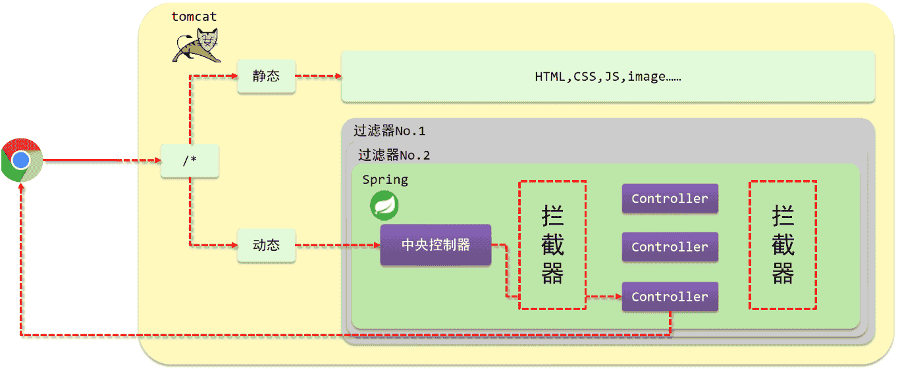

SpringMVC之拦截器
1. 拦截器
介绍如下内容:
- 拦截器概念
- 入门案例
- 拦截器参数
- 拦截器工作流程分析
1.1 拦截器概念
讲解拦截器的概念之前，先看一张图:

(1)浏览器发送一个请求会先到Tomcat的web服务器
(2)Tomcat服务器接收到请求以后，会去判断请求的是静态资源还是动态资源
(3)如果是静态资源，会直接到Tomcat的项目部署目录下去直接访问
(4)如果是动态资源，就需要交给项目的后台代码进行处理
(5)在找到具体的方法之前，可以去配置过滤器(可以配置多个)，按照顺序进行执行
(6)然后进入到到中央处理器(SpringMVC中的内容)，SpringMVC会根据配置的规则进行拦截
(7)如果满足规则，则进行处理，找到其对应的controller类中的方法进行执行,完成后返回结果
(8)如果不满足规则，则不进行处理
(9)这个时候，如果需要在每个Controller方法执行的前后添加业务，具体该如何来实现?
这个就是拦截器要做的事。
- 拦截器（Interceptor）是一种动态拦截方法调用的机制，在SpringMVC中动态拦截控制器方法的执行
- 作用:
- 在指定的方法调用前后执行预先设定的代码
- 阻止原始方法的执行
- 总结：拦截器就是用来做增强
看完以后，会发现
- 拦截器和过滤器在作用和执行顺序上也很相似
所以这个时候，就有一个问题需要思考:拦截器和过滤器之间的区别是什么?
- 归属不同：Filter属于Servlet技术，Interceptor属于SpringMVC技术
- 拦截内容不同：Filter对所有访问进行增强，Interceptor仅针对SpringMVC的访问进行增强
1.2 拦截器入门案例
1.2.1 环境准备
-
创建一个Web的Maven项目
-
pom.xml添加SSM整合所需jar包
1
2
3
4
5
6
7
8
9
10
11
12
13
14
15
16
17
18
19
20
21
22
23
24
25
26
27
28
29
30
31
32
33
34
35
36
37
38
39
40
41
42
43
44
45
46
47
48
49
50
51
52
53
<project xmlns="http://maven.apache.org/POM/4.0.0" xmlns:xsi="http://www.w3.org/2001/XMLSchema-instance"
xsi:schemaLocation="http://maven.apache.org/POM/4.0.0 http://maven.apache.org/xsd/maven-4.0.0.xsd">
<modelVersion>4.0.0</modelVersion>
<groupId>com.itheima</groupId>
<artifactId>springmvc_12_interceptor</artifactId>
<version>1.0-SNAPSHOT</version>
<packaging>war</packaging>
<dependencies>
<dependency>
<groupId>javax.servlet</groupId>
<artifactId>javax.servlet-api</artifactId>
<version>3.1.0</version>
<scope>provided</scope>
</dependency>
<dependency>
<groupId>org.springframework</groupId>
<artifactId>spring-webmvc</artifactId>
<version>5.2.10.RELEASE</version>
</dependency>
<dependency>
<groupId>com.fasterxml.jackson.core</groupId>
<artifactId>jackson-databind</artifactId>
<version>2.9.0</version>
</dependency>
</dependencies>
<build>
<plugins>
<plugin>
<groupId>org.apache.tomcat.maven</groupId>
<artifactId>tomcat7-maven-plugin</artifactId>
<version>2.1</version>
<configuration>
<port>80</port>
<path>/</path>
</configuration>
</plugin>
<plugin>
<groupId>org.apache.maven.plugins</groupId>
<artifactId>maven-compiler-plugin</artifactId>
<configuration>
<source>8</source>
<target>8</target>
</configuration>
</plugin>
</plugins>
</build>
</project> -
创建对应的配置类
1
2
3
4
5
6
7
8
9
10
11
12
13
14
15
16
17
18
19
20
21
22
23
24
25
26
27
28public class ServletContainersInitConfig extends AbstractAnnotationConfigDispatcherServletInitializer {
protected Class<?>[] getRootConfigClasses() {
return new Class[0];
}
protected Class<?>[] getServletConfigClasses() {
return new Class[]{SpringMvcConfig.class};
}
protected String[] getServletMappings() {
return new String[]{"/"};
}
//乱码处理
protected Filter[] getServletFilters() {
CharacterEncodingFilter filter = new CharacterEncodingFilter();
filter.setEncoding("UTF-8");
return new Filter[]{filter};
}
}
public class SpringMvcConfig{
} -
创建模型类Book
1
2
3
4
5
6
7
8
9
10
11
12
13
14
15
16
17
18
19
20
21
22
23
24
25
26
27
28public class Book {
private String name;
private double price;
public String getName() {
return name;
}
public void setName(String name) {
this.name = name;
}
public double getPrice() {
return price;
}
public void setPrice(double price) {
this.price = price;
}
public String toString() {
return "Book{" +
"书名='" + name + '\'' +
", 价格=" + price +
'}';
}
} -
编写Controller
1
2
3
4
5
6
7
8
9
10
11
12
13
14
15
16
17
18
19
20
21
22
23
24
25
26
27
28
29
30
31
32
33
34
public class BookController {
public String save( Book book){
System.out.println("book save..." + book);
return "{'module':'book save'}";
}
public String delete( Integer id){
System.out.println("book delete..." + id);
return "{'module':'book delete'}";
}
public String update( Book book){
System.out.println("book update..."+book);
return "{'module':'book update'}";
}
public String getById( Integer id){
System.out.println("book getById..."+id);
return "{'module':'book getById'}";
}
public String getAll(){
System.out.println("book getAll...");
return "{'module':'book getAll'}";
}
}
最终创建好的项目结构如下:
1 | springmvc_12_interceptor |
1.2.2 拦截器开发
步骤1:创建拦截器类
让类实现HandlerInterceptor接口，重写接口中的三个方法。
1 |
|
**注意:**拦截器类要被SpringMVC容器扫描到。
步骤2:配置拦截器类
1 |
|
步骤3:SpringMVC添加SpringMvcSupport包扫描
1 |
|
步骤4:运行程序测试
使用PostMan发送http://localhost/books
如果发送http://localhost/books/100会发现拦截器没有被执行，原因是拦截器的addPathPatterns方法配置的拦截路径是/books,现在发送的是/books/100，所以没有匹配上，因此没有拦截，拦截器就不会执行。
步骤5:修改拦截器拦截规则
1 |
|
这个时候，如果再次访问http://localhost/books/100，拦截器就会被执行。
最后说一件事，就是拦截器中的preHandler方法，如果返回true,则代表放行，会执行原始Controller类中要请求的方法，如果返回false，则代表拦截，后面的就不会再执行了。
步骤6:简化SpringMvcSupport的编写
1 |
|
此后咱们就不用再写SpringMvcSupport类了。
最后来看下拦截器的执行流程:
当有拦截器后，请求会先进入preHandle方法，
如果方法返回true，则放行继续执行后面的handle[controller的方法]和后面的方法
如果返回false，则直接跳过后面方法的执行。
1.3 拦截器参数
1.3.1 前置处理方法
原始方法之前运行preHandle
1 | public boolean preHandle(HttpServletRequest request, |
- request:请求对象
- response:响应对象
- handler:被调用的处理器对象，本质上是一个方法对象，对反射中的Method对象进行了再包装
使用request对象可以获取请求数据中的内容，如获取请求头的Content-Type
1 | public boolean preHandle(HttpServletRequest request, HttpServletResponse response, Object handler) throws Exception { |
使用handler参数，可以获取方法的相关信息
1 | public boolean preHandle(HttpServletRequest request, HttpServletResponse response, Object handler) throws Exception { |
1.3.2 后置处理方法
原始方法运行后运行，如果原始方法被拦截，则不执行
1 | public void postHandle(HttpServletRequest request, |
前三个参数和上面的是一致的。
modelAndView:如果处理器执行完成具有返回结果，可以读取到对应数据与页面信息，并进行调整
因为咱们现在都是返回json数据，所以该参数的使用率不高。
1.3.3 完成处理方法
拦截器最后执行的方法，无论原始方法是否执行
1 | public void afterCompletion(HttpServletRequest request, |
前三个参数与上面的是一致的。
ex:如果处理器执行过程中出现异常对象，可以针对异常情况进行单独处理
因为现在已经有全局异常处理器类，所以该参数的使用率也不高。
这三个方法中，最常用的是preHandle,在这个方法中可以通过返回值来决定是否要进行放行，可以把业务逻辑放在该方法中，如果满足业务则返回true放行，不满足则返回false拦截。
1.4 拦截器链配置
目前，在项目中只添加了一个拦截器，如果有多个，该如何配置?配置多个后，执行顺序是什么?
1.4.1 配置多个拦截器
步骤1:创建拦截器类
实现接口，并重写接口中的方法
1 |
|
步骤2:配置拦截器类
1 |
|
步骤3:运行程序，观察顺序
拦截器执行的顺序是和配置顺序有关。就和前面所提到的运维人员进入机房的案例，先进后出。
- 当配置多个拦截器时，形成拦截器链
- 拦截器链的运行顺序参照拦截器添加顺序为准
- 当拦截器中出现对原始处理器的拦截，后面的拦截器均终止运行
- 当拦截器运行中断，仅运行配置在前面的拦截器的afterCompletion操作
preHandle：与配置顺序相同，必定运行
postHandle:与配置顺序相反，可能不运行
afterCompletion:与配置顺序相反，可能不运行。
这个顺序不太好记，最终只需要把握住一个原则即可:以最终的运行结果为准